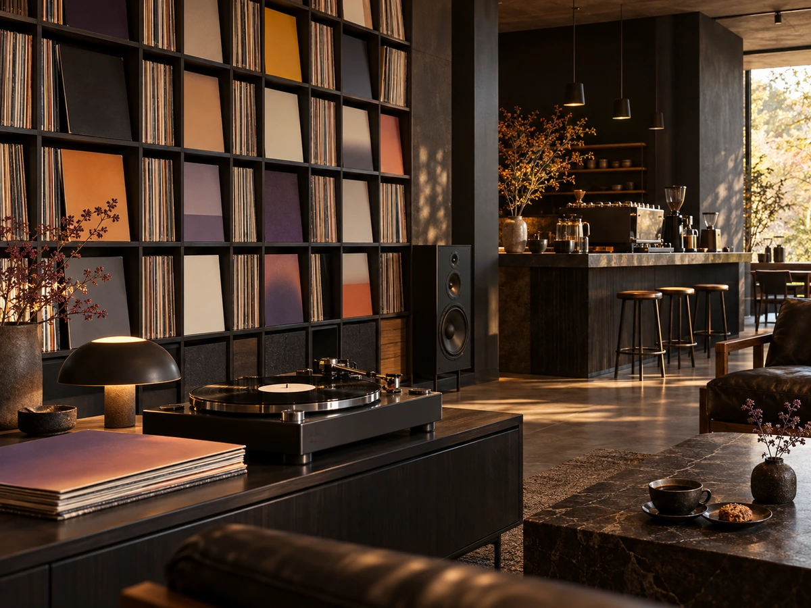

CONCEPT
一杯ごとに、
違う果物の香り
黒井鳥珈琲は、北秋田市鷹巣、鷹巣駅から歩いて5分ほどの自家焙煎のお店です。 産地ごとに選んだ豆を焙煎し、ハンドドリップで淹れています。 Instagramでは、豆ひとつひとつに「カッピングプロファイル」（味の特徴を表す言葉）を添えて紹介しています。
Cupping Profile
レモン、ピーチ、アプリコット、白ワイン、ハニー。ブルーベリー、グレープ、キャラメル。プラム、オレンジ、ミルクチョコレート。豆によって、感じる味がこんなに違います。
ケニアの豆は、こう紹介されていました。
冷めるにつれて甘さの伴うブドウのような明るいアシディティも好印象でした。 公式Instagram（2026年8月14日）より
飲みながら、味の変化まで楽しめるように豆を選んでいるお店です。
